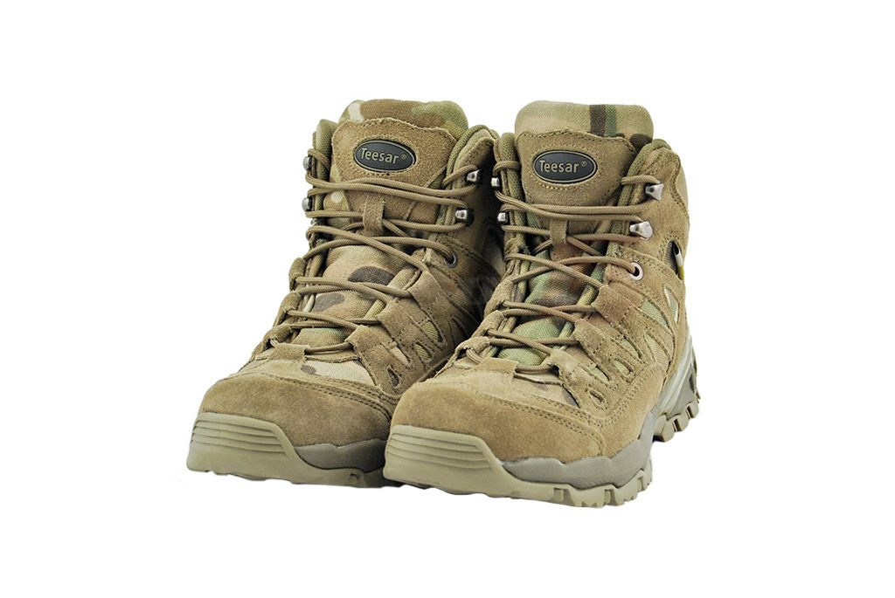
Ghete Multicam
310 Lei
Cod produs: I001
Descriere Produs:
Ghete din piele (piele de bovina),
Captuseala: poliester
Talpa: cauciuc / EVA (foarte inaltă calitate, izolat cu spuma, ține piciorul uscat și cald)
- Branț poliester detasabil
- Bombeu intarit
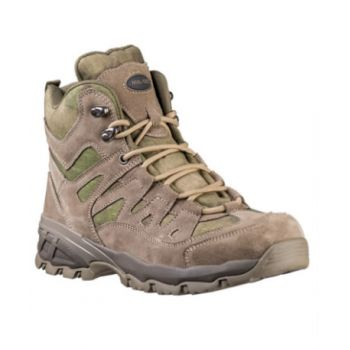
Ghete Multicam
290 Lei
Cod produs: I002
Descriere Produs:
Ghete din piele (piele de bovina),
Captuseala: poliester
Talpa: cauciuc / EVA (foarte inaltă calitate, izolat cu spuma, ține piciorul uscat și cald)
- Branț poliester detasabil
- Bombeu intarit
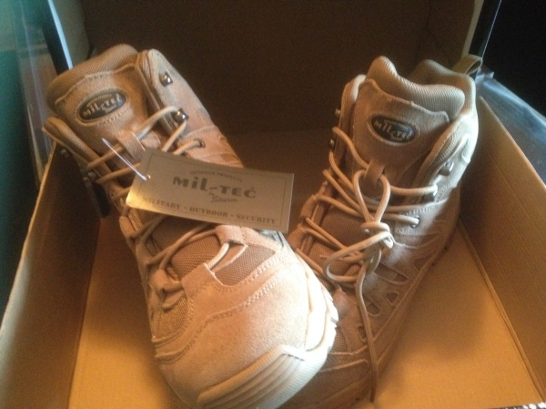
Ghete Trooper Coyote
300 Lei
Cod produs: I003
Descriere Produs:
Ghetele sunt confectionate din piele de calitate cu un interior bine lucrat.
Talpa este din cauciuc de calitate superioara bine izolata cu spuma, pastrand piciorul uscat si cald.
-material exterior :piele bovina si poliester
-material interior :poliester
-talpa:cauciuc de calitate superioara
-talpa prezinta striatii pentru o buna aderenta pe sol
-intaritura in fata
-inchidere cu siret
-culoare cafeniu
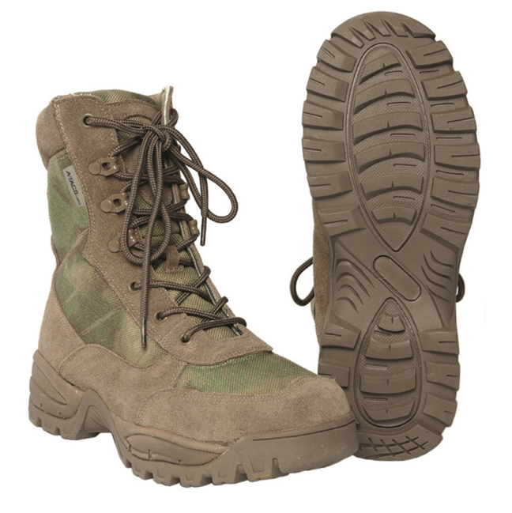
Bocanci Militari Tactical Mil-Tacs FG
280 Lei
Cod produs: I004
Descriere Produs:
Material: piele de vaca, poliester
Talpa: cauciuc / EVA (foarte inaltă calitate,izolat cu spuma,ține piciorul uscat și cald)
Fermoar.
Branț poliester detasabil
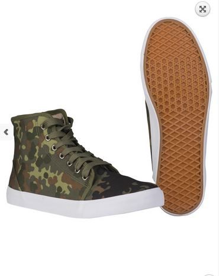
Tenisi Army Flectar
120 Lei
Cod produs: I005
Descriere Produs:
65% Polyester, 35% Cotton
Ripstop fabric
Outsole: Rubber
Shoe laces: 100% Polyester
- stylish ′high-tops′ army sneakers
- white outsole
- can be perfect combined with your leisure outfit
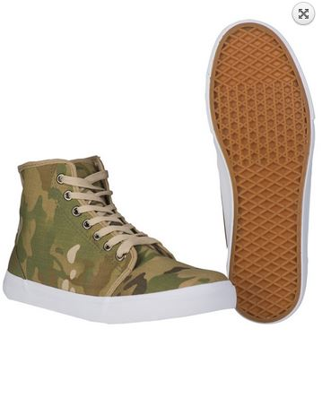
Tenisi Army Flectar
120 Lei
Cod produs: I006
Descriere Produs:
65% Polyester, 35% Cotton
Ripstop fabric
Outsole: Rubber
Shoe laces: 100% Polyester
- stylish ′high-tops′ army sneakers
- white outsole
- can be perfect combined with your leisure outfit
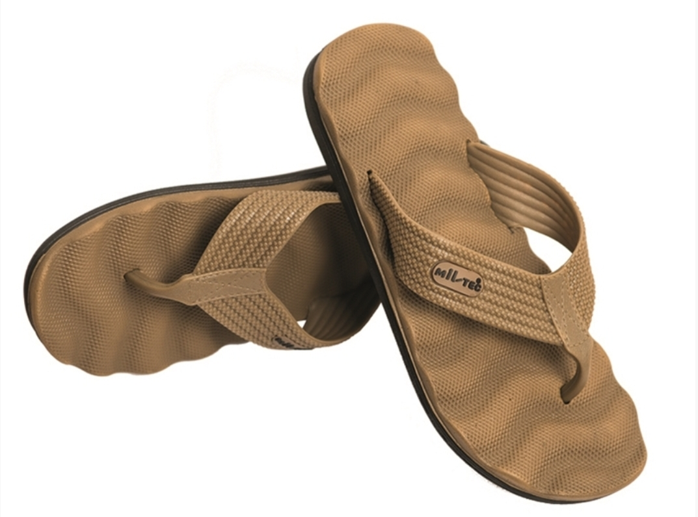
Coyote Combat Sandals
? Lei
Cod produs: I007
Descriere Produs:
Sole/Inner sole: EVA foam
Straps: EVA rigid foam
- waved, soft inner sole for ergonomic standing in sandal
- wide strap for perfect hold
- sole with tread for good hold also on rough ground
- perfect upholstered sandal with thick sole
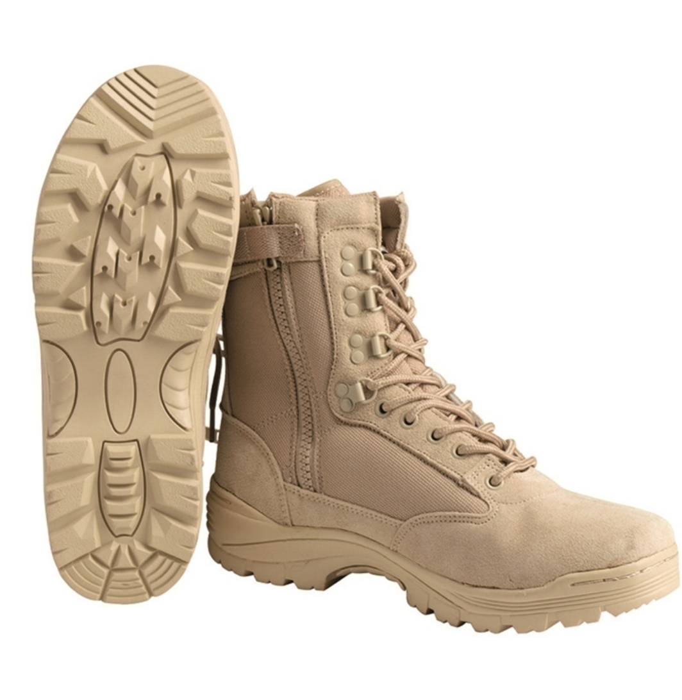
Khaki Ghete Tactical cu Fermoar YKK
? Lei
Cod produs: I008
Descriere Produs:
Upper: 100% Polyester
Leather part: 100% Suede (cow)
Lining: 100% Polyester, Thinsulate™ Insulation
Outsole: Rubber
Insole: EVA (high quality, excellent insulated foam, keep the foot try and warm)
Shoelace: 100% Polyester
- YKK with hook and loop closure loop
- 9-eyelet lacing
- speed lace system
- reinforced heel area
- upholstered leg
- toecap
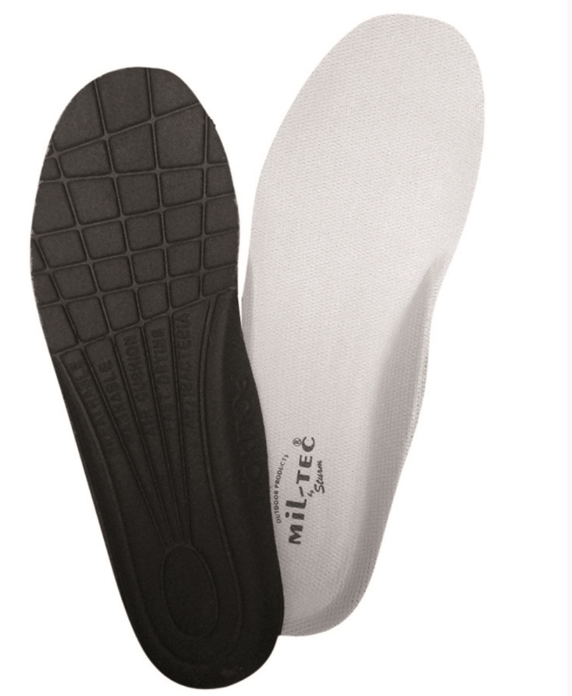
Mil-Tec Insoles Poliyou
? Lei
Cod produs: I009
Descriere Produs:
Sole consists of 3 layers:
1. layer: 100% Polyester
2. layer: POLIYOU® foam
3. layer: 100% Polyester
- washable, breathable and antibacterial equipped
- absorb dampness
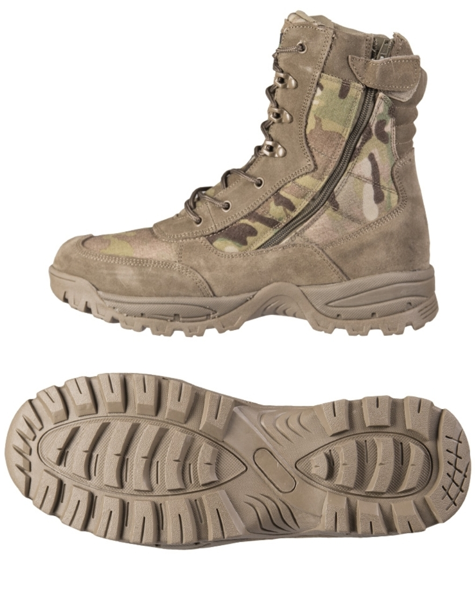
Ghete Tactical cu Fermoar YKK
? Lei
Cod produs: I010
Descriere Produs:
Upper: 100% Polyester (original Mulitcam®)
Leather part: 100% Suede (cow)
Lining: 100% Polyester
Outsole: Rubber with EVA (high quality, excellent insulated foam, keep the foot try and warm)
Insole: EVA (high quality, excellent insulated foam, keep the foot try and warm)
Shoelace: 100% Polyester
- YKK zipper with hook and loop closure loop
- 7-eyelet lacing
- speed lace system
- reinforced heel area
- upholstered leg
- toecap
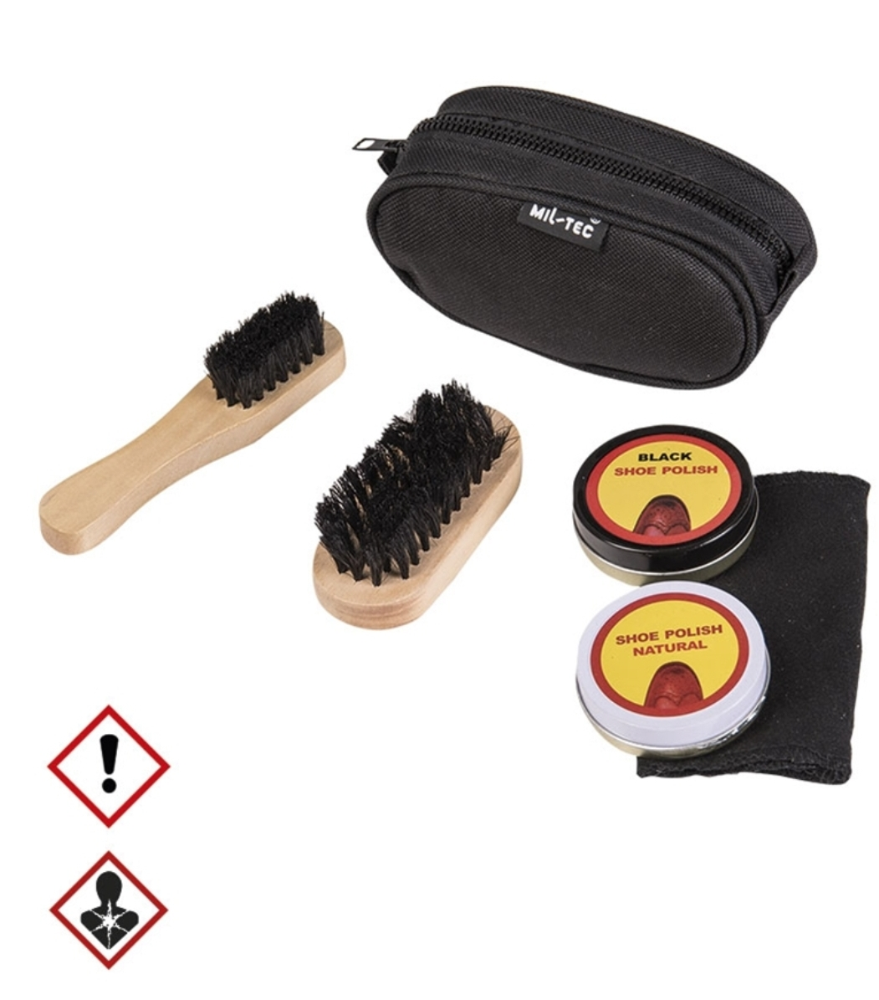
OD Chit Curatare Incaltaminte
? Lei
Cod produs: I011
Descriere Produs:
Pouch: 100% Nylon, Polyvinylchlorid coated
- 2 wood brushs
- 2 shoe polish
- transportation bag
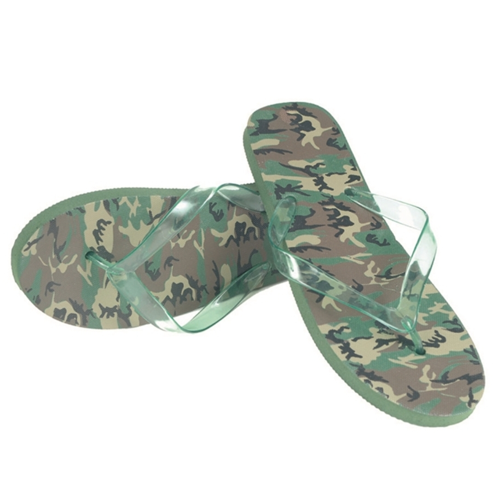
WL Plastic Sandals
20 Lei
Cod produs: I012
Descriere Produs:
Outsole: EVA rigid foam (EVA = high quality foam)
Toe strap: 100% Polyvinylchlorid